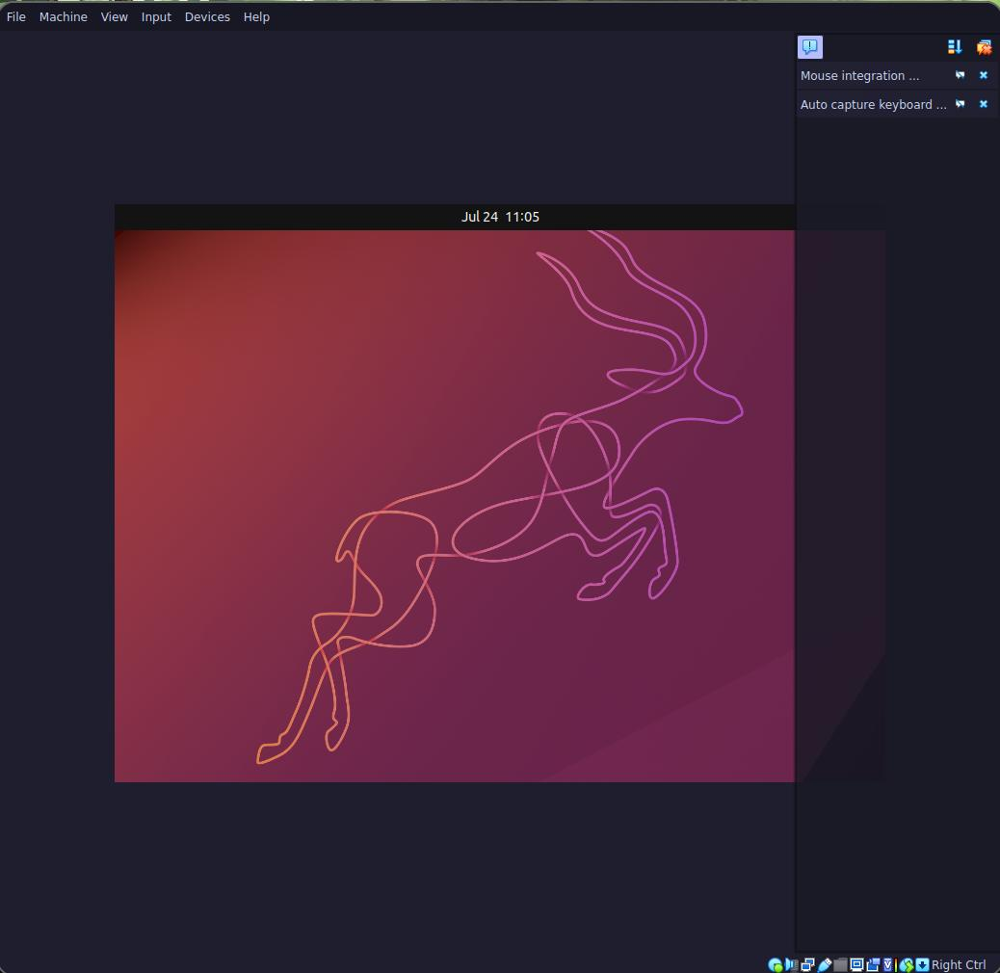

sudo pacman -S virtualbox virtualbox-host-modules-arch
sudo usermod -aG vboxusers rinrireboot
I used previously downloaded ubuntu 22.10 iso
To install it I just pressed next. I didn’t create a virtual disk though. 
To run it I selected the installation ISO. After shutdown, I added more memory and 1 cpu.